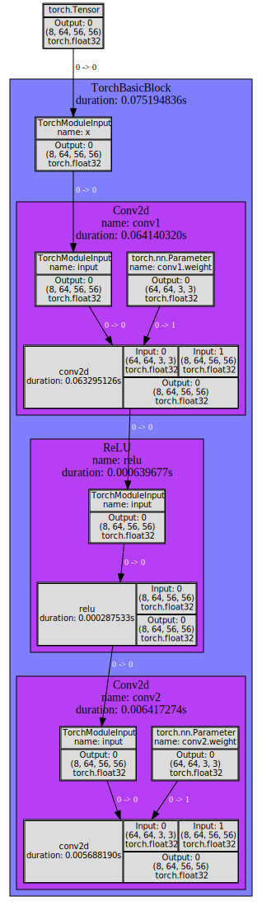
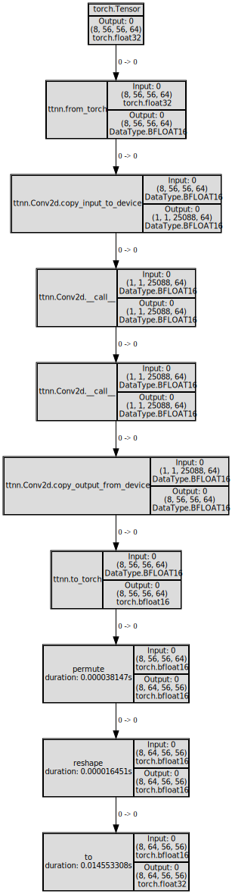

Resnet Block
[1]:
import torch
import ttnn
from ttnn.tracer import trace, visualize
from ttnn.model_preprocessing import preprocess_model
[2]:
torch.manual_seed(0)
device = ttnn.open_device(device_id=0)
Metal | INFO | Initializing device 0
Device | INFO | Opening user mode device driver
2024-02-13 01:56:46.147 | INFO | SiliconDriver - Detected 1 PCI device : {0}
2024-02-13 01:56:46.157 | WARNING | SiliconDriver - init_detect_tt_device_numanodes(): Could not determine NumaNodeSet for TT device (physical_device_id: 0 pci_bus_id: 0000:00:08.0)
2024-02-13 01:56:46.157 | WARNING | SiliconDriver - Could not find NumaNodeSet for TT Device (physical_device_id: 0 pci_bus_id: 0000:00:08.0)
2024-02-13 01:56:46.159 | WARNING | SiliconDriver - bind_area_memory_nodeset(): Unable to determine TT Device to NumaNode mapping for physical_device_id: 0. Skipping membind.
---- ttSiliconDevice::init_hugepage: bind_area_to_memory_nodeset() failed (physical_device_id: 0 ch: 0). Hugepage allocation is not on NumaNode matching TT Device. Side-Effect is decreased Device->Host perf (Issue #893).
Metal | INFO | AI CLK for device 0 is: 1202 MHz
Torch Module (from torchvision)
[3]:
def conv3x3(in_planes: int, out_planes: int, stride: int = 1, groups: int = 1, dilation: int = 1) -> torch.nn.Conv2d:
"""3x3 convolution with padding"""
return torch.nn.Conv2d(
in_planes,
out_planes,
kernel_size=3,
stride=stride,
padding=dilation,
groups=groups,
bias=False,
dilation=dilation,
)
class TorchBasicBlock(torch.nn.Module):
expansion: int = 1
def __init__(
self,
inplanes: int,
planes: int,
stride: int = 1,
downsample=None,
groups: int = 1,
base_width: int = 64,
dilation: int = 1,
norm_layer=None,
) -> None:
super().__init__()
if norm_layer is None:
norm_layer = torch.nn.BatchNorm2d
if groups != 1 or base_width != 64:
raise ValueError("BasicBlock only supports groups=1 and base_width=64")
if dilation > 1:
raise NotImplementedError("Dilation > 1 not supported in BasicBlock")
# Both self.conv1 and self.downsample layers downsample the input when stride != 1
self.conv1 = conv3x3(inplanes, planes, stride)
# self.bn1 = norm_layer(planes)
self.relu = torch.nn.ReLU(inplace=True)
self.conv2 = conv3x3(planes, planes)
# self.bn2 = norm_layer(planes)
self.downsample = downsample
self.stride = stride
def forward(self, x: torch.Tensor) -> torch.Tensor:
identity = x
out = self.conv1(x)
# out = self.bn1(out)
out = self.relu(out)
out = self.conv2(out)
# out = self.bn2(out)
if self.downsample is not None:
identity = self.downsample(x)
# out += identity
# out = self.relu(out)
return out
Create torch module and preprocess it to get ttnn parameters
[4]:
torch_model = TorchBasicBlock(inplanes=64, planes=64, stride=1)
torch_input_tensor = torch.rand((8, 64, 56, 56), dtype=torch.float32)
reader_patterns_cache = {}
parameters = preprocess_model(
initialize_model=lambda: torch_model,
run_model=lambda model: model(torch_input_tensor),
reader_patterns_cache=reader_patterns_cache,
device=device,
)
2024-02-13 01:56:47.222 | WARNING | ttnn.model_preprocessing:_initialize_model_and_preprocess_parameters:434 - Putting the model in eval mode
2024-02-13 01:56:47.301 | INFO | ttnn.model_preprocessing:infer_ttnn_module_args:368 - Dumping graph of the model to /tmp/ttnn/model_graph.svg
2024-02-13 01:56:47.346 | INFO | torchtrail.multidigraph:visualize_graph:316 - Graph visualization saved to "/tmp/ttnn/model_graph.svg"
2024-02-13 01:56:47.550 | INFO | ttnn.model_preprocessing:preprocess_model:543 - Moving model weights to device
2024-02-13 01:56:47.551 | INFO | ttnn.model_preprocessing:preprocess_model:545 - Moved model weights to device
Display the parameters of the module
[5]:
parameters
[5]:
{
conv1: <ttnn.operations.conv.Conv2D object at 0x7f29c3b0fc10>,
conv2: <ttnn.operations.conv.Conv2D object at 0x7f299d093eb0>
}
Display the traced torch graph
[6]:
from IPython.display import SVG
SVG('/tmp/ttnn/model_graph.svg')
[6]:

Implement ttnn version of the module. Pass in the parameters into the constructor.
[7]:
class TTNNBasicBlock:
def __init__(
self,
parameters,
) -> None:
self.conv1 = parameters.conv1
self.conv2 = parameters.conv2
if "downsample" in parameters:
self.downsample = parameters.downsample
else:
self.downsample = None
def __call__(self, x):
identity = x
out = self.conv1(x)
# out = self.bn1(out)
out = self.conv2(out)
# out = self.bn2(out)
if self.downsample is not None:
identity = self.downsample(x)
# out = ttnn.add(out, identity, memory_config=ttnn.get_memory_config(out))
# out = ttnn.to_memory_config(out, memory_config=ttnn.DRAM_MEMORY_CONFIG)
# out = self.relu(out)
return out
def run_conv(conv, torch_input_tensor):
input_tensor = torch.permute(torch_input_tensor, (0, 2, 3, 1))
input_tensor = ttnn.from_torch(input_tensor, dtype=ttnn.bfloat16)
input_tensor = conv.conv1.copy_input_to_device(input_tensor)
output_tensor = conv(input_tensor)
output_tensor = conv.conv2.copy_output_from_device(output_tensor)
output_tensor = ttnn.to_torch(output_tensor)
output_tensor = torch.permute(output_tensor, (0, 3, 1, 2))
output_tensor = torch.reshape(output_tensor, torch_input_tensor.shape)
output_tensor = output_tensor.to(torch_input_tensor.dtype)
return output_tensor
Run ttnn module and display the traced graph
[8]:
ttnn_model = TTNNBasicBlock(parameters)
with ttnn.tracer.trace():
output_tensor = run_conv(ttnn_model, torch_input_tensor)
ttnn.tracer.visualize(output_tensor)
[8]:

[9]:
ttnn.close_device(device)
Metal | INFO | Closing device 0